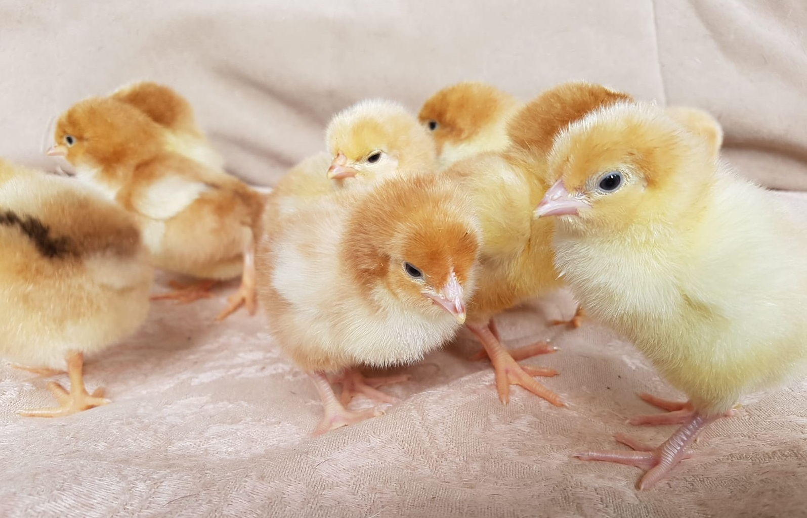

Inkubācija un cāļu audzēšana
Optimālā olu uzglabāšanas temperatūra ir +12C. Olas pēc atvešanas jānovieto klusā vietā uz vismaz 24h, lai tās "nostājas". Pirms inkubēšanas ir iespējams nomazgāt ar siltu ūdeni pašas netīrākās olas, taču ne ātrāk par 30 min pirms ievietošanas inkubatorā. Mēs inkubējam izmantojot "dry incubation", kas nozīmē, ka relatīvais gaisa mitrums ir samērā zems. Pirmās 18 dienas olas inkubātorā groza vismaz reizi dienā un mitrumu uztur 45%-50% robežās. Pēdējās 3 dienas olas novieto guļus un mitrumu paaugstina līdz 65%, augstāk nav vēlams. No brīža, kad ir sācis šķilties pirmais cālis var skaitīt 48-72h, kuru laikā nedrīkst virināt inkubātoru, lai tajā netiktu spēja, sausa gaisa plūsma, kura var "pielipināt" cāļus pie čaumalām. Sagaida, kad ir izšķīlušies maksimāli daudz cāļi (parasti ņemu tos ārā 22. dienā skaitot no 1. inkubēšanas dienas). Ja citi vēļ šķiļas, tad brīdī, kad tiek vērts vaļā inkubātors, to čaumalas apsmidzina ar remdenu ūdeni.
Cāļus novieto pie sildlampām vai sildpaneļiem. Siltumam ir jābūt pieejamam vismaz līz 3 nedēļu vecumam, labāk - līdz piecu nedēļu vecumam. Siltuma avotam ir jābūt vismaz 37.5C siltam. Tikai istabas temperatūrā caļi sals un, labākajā gadījumā, nīkuļos.
Cāļus baro ar kombinēto cāļu barību, kura ir pieejama visu laiku. Ūdenim jābūt tīram. Tam var pievienot medu. Var dot lociņus, taču tad ir jābūt pieejamām smiltīm. Var reizi nedēļā dot grieķu jogurtu.
Cāļus turam ēveļskaidu pakaišos.